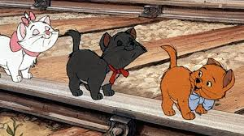
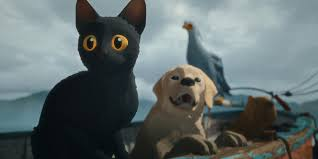
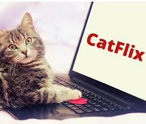
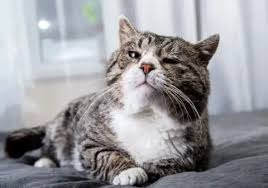
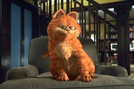
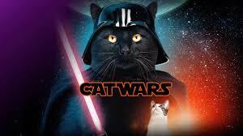

A gatinha Marie completa 56 anos em 2026

O filme "Flow" é bom mesmo?

Estúdio anuncia longa-metragem protagonizado por gatos falantes

Os filmes de gatinhos mais fofos que viram febre na internet

Do cinema ao streaming: onde assistir os melhores filmes de gatos

Histórias felinas que viraram filmes

Garfield completa 48 anos em 2026
